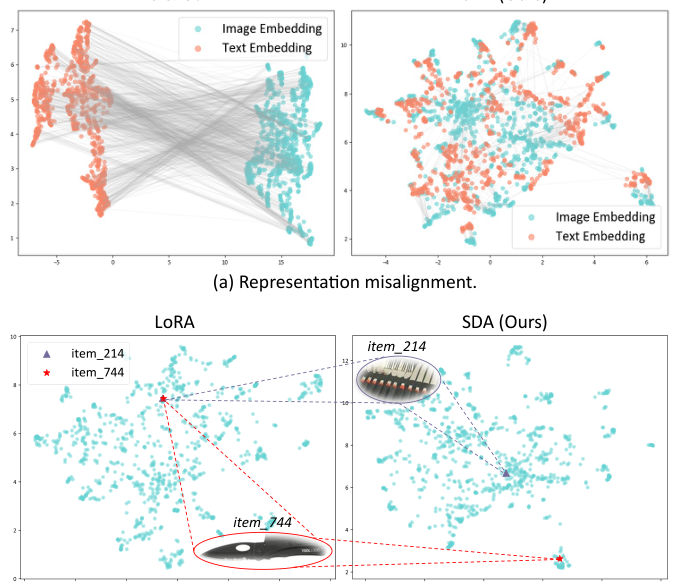
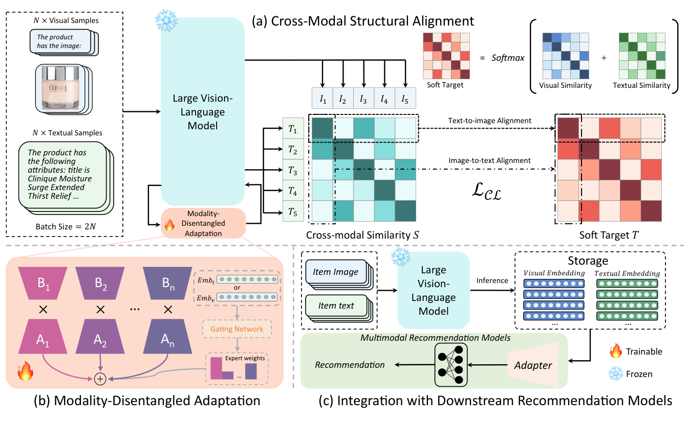
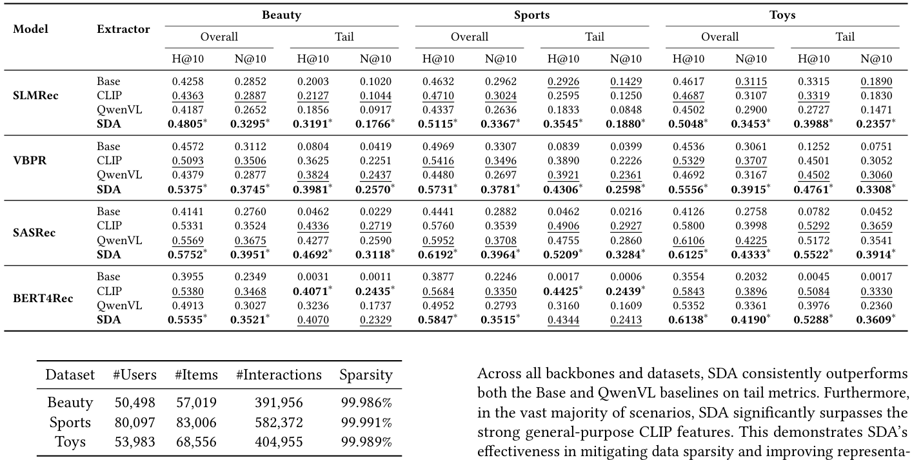
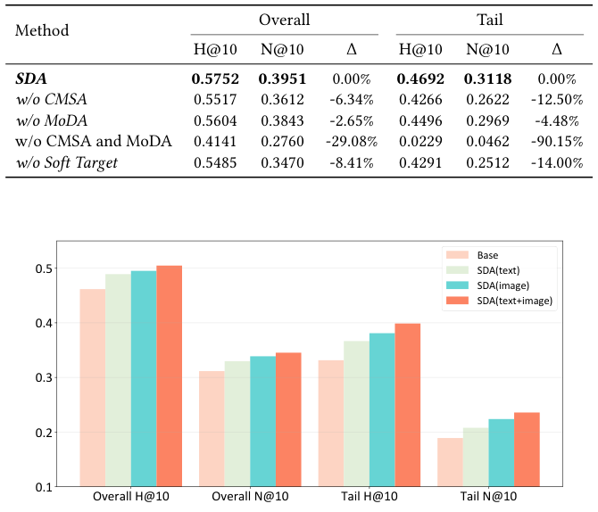
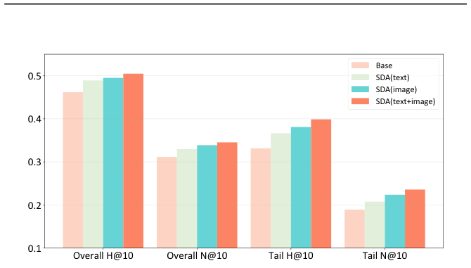

Structural and Disentangled Adaptation of Large Vision Language Models for Multimodal Recommendation (面向多模态推荐的大视觉语言模型结构与解耦适配)
- 会议/期刊: SIGIR 2026
- 推荐链路定位: 召回/特征表征（作为多模态特征提取器，离线预计算后接入下游推荐模型）
- 研究方向: 多模态推荐 / 序列推荐
- 论文原文: https://arxiv.org/abs/2512.06883v2
- 开源代码: https://github.com/RaoZhongtao/SDA
TL;DR (核心速览)
针对 LVLM 直接用于多模态推荐时的表征错位（领域鸿沟导致图文嵌入空间不对齐）与梯度冲突（共享 LoRA 适配器使视觉/文本梯度相互干扰）两大痛点，本文提出 SDA 轻量框架：CMSA 以模态内结构作为软教师做分布级跨模态对齐，MoDA 用专家化门控低秩路径解耦梯度流。在 Amazon 三数据集、四种骨干（SLMRec/VBPR/SASRec/BERT4Rec）上，H@10 平均提升 6.15%、N@10 提升 8.64%，长尾最高提升 12.83%/18.70%，推理开销极小。
Background & Motivation (背景与动机)
- 领域背景与主流范式: 多模态推荐早期依赖独立编码器（CNN/Transformer）或双塔 CLIP 提取图文特征，再与 ID 嵌入融合。LVLM（如 Qwen-VL、GPT-4o）凭借统一架构与深层跨模态注意力，在细粒度图文关系建模与世界知识迁移上更具潜力，被视为理想的多模态特征骨干。
- 现有方法局限 (Limitations of Prior Work):
- 表征错位 (C1)：商品图片/短标题等域内数据与 LVLM 的通用预训练数据存在显著领域鸿沟，导致同一物品的图文嵌入空间不对齐（图 1(a)）。
- 梯度冲突 (C2)：参数高效微调（如 LoRA）在视觉与文本间共享低秩适配器，造成梯度相互干扰，使视觉相似但功能不同的物品被错误聚类（图 1(b)）。
- 零样本 LVLM 特征并非"即插即用"：实验显示 vanilla QwenVL 在多数场景下甚至不如 CLIP 或原始 Base 特征（如 SLMRec 在 Sports 上 0.4337 vs. 0.4632 H@10），存在负迁移。
- 核心挑战 (Key Challenge): 简单特征拼接或加深网络无法解决——错位是分布层面的语义鸿沟，需在适配阶段对齐；冲突源于共享适配器的结构性缺陷，需从梯度路由层面解耦。
- 核心洞察与切入点 (Key Insight): 作者观察到，即便跨模态对齐丢失，模态内关系结构仍然完好保留，可将其作为软教师指导跨模态对齐；同时梯度冲突的根因是共享适配器，可用专家化门控低秩路径替代。

Problem Formulation & Method (问题定义与方法架构)
1. 符号定义与输入表征 (Notations & Input Representations)
- 用户集 \(\mathcal{U}\)、物品集 \(\mathcal{I}\)，物品 \(i\) 具有图像与文本模态。
- 文本提示：拼接标题、类别、品牌等字段并附指令 "The product has the following attributes:"；视觉提示："The product has the image:"。
- 两路提示输入预训练 LVLM，对最后一层隐状态做均值池化并投影，得到 \(d_m\) 维文本/视觉嵌入 \(\mathbf{e}^t_i, \mathbf{e}^v_i \in \mathbb{R}^{d_m}\)。
- 下游推荐模型统一嵌入维度 \(d=128\)。
2. 整体流水线 (Overall Architecture)
两阶段流水线：先向 LVLM 插入 MoDA，仅优化其参数以最小化 \(\mathcal{L}_{CL}\)，得到适配后的图文嵌入；随后冻结 LVLM，离线预计算全部物品嵌入，通过拼接或适配器融合接入现有多模态/序列推荐器。
flowchart TD
A["输入层: 物品图像 + 文本提示 (标题/类别/品牌)"] --> B["LVLM 骨干 (Qwen2.5-VL 7B, 冻结)"]
B --> C["MoDA: 专家化门控低秩路径 (模态解耦)"]
C --> D["均值池化 + 投影: 文本嵌入 e_t / 视觉嵌入 e_v"]
D --> E["CMSA: 结构软教师分布级跨模态对齐 (L_CL)"]
E --> F["离线预计算物品嵌入"]
F --> G["下游推荐器 (SLMRec/VBPR/SASRec/BERT4Rec)"]
G --> H["打分预测"]
3. 核心模块设计与数学原理 (Key Designs & Formulations)
模块一：跨模态结构对齐 (CMSA)
给定批内 \(N\) 个物品，先计算跨模态相似度矩阵：
再以模态内相似度均值构造结构软教师分布：
其中 \(\mathrm{Softmax}_j\) 为按行归一化。\(T_{i,:}\) 编码了锚点物品 \(i\) 在图文联合视角下的邻域结构。结构感知对比损失为双向 KL 匹配：
其中 \(P_{ij} = \mathrm{Softmax}_j(S_{ij})\)。物理直觉：不直接对齐单个图文对，而是对齐整个相似度分布，从而把模态内关系知识迁移到联合空间，得到更具判别性、模态不变性的嵌入。
模块二：模态解耦适配 (MoDA)
标准 LoRA 更新 \(\Delta W = BA\)。MoDA 将低秩空间分解为 \(N_e\) 个专家，各模态软组合：
每个模态 \(m\) 引入可训练模态嵌入 \(\mathrm{Emb}_m\)，经小门控网络产生专家权重：
前向计算为：
物理直觉：各模态共享同一专家池，但通过 \(\omega^m\) 强调不同子集，无需维护完全独立的适配器，在保持总秩 \(r\)（参数量与标准 LoRA 相当）的前提下解耦视觉/文本梯度流。
4. 训练目标、负采样与推理复杂度 (Optimization, Negative Sampling & Complexity)
- 损失函数: 仅使用结构感知对比损失 \(\mathcal{L}_{CL}\)（双向 KL 散度），温度系数 \(\tau\) 与 \(\tau_2\) 为超参；CMSA 本身不引入额外可训练参数。
- 训练负采样策略: 采用批内对比（in-batch），批大小 \(N=32\)（训练），通过批内其他物品隐式构成负例，无需显式负采样。
- 时间与空间复杂度: 仅向冻结 LVLM 添加少量低秩专家，可训练参数为骨干的极小比例；物品嵌入离线预计算，下游推荐器服务时复杂度基本不变。训练最多 4000 步，更新所有线性层但冻结 ViT 视觉编码器；专家数 \(N_e=8\)。
Experimental Setup & Evaluation Protocol (实验设置与评估协议)
- 数据集统计与预处理: 采用 Amazon Reviews 的 Beauty、Sports、Toys 三个类目：

| 数据集 (Dataset) | 用户数 (#Users) | 物品数 (#Items) | 交互数 (#Interactions) | 稀疏度 (Sparsity) | 模态/辅助特征说明 |
|---|---|---|---|---|---|
| Beauty | 50,498 | 57,019 | 391,956 | 99.986% | 图像 (AlexNet 特征) + 文本 (all-MiniLM-L6-v2) |
| Sports | 80,097 | 83,006 | 582,372 | 99.991% | 同上 |
| Toys | 53,983 | 68,556 | 404,955 | 99.989% | 同上 |
- 数据划分方式 (Splitting Strategy): 遵循标准 Leave-One-Out (留一法) 协议 [4,13,15]。原文未明确报告全局时间戳切分，存在一定未来信息泄露风险（LOO 常见问题）。
- 排名评测协议 (Ranking Protocol): Sampled Ranking——每个正样本物品与 100 个用户未交互的随机负样本共同排序（1 正配 100 负），非全库排序。
- 评价指标与显著性检验: H@10、N@10；长尾定义为交互数少于 4 的物品，对应真值物品属长尾的用户构成长尾用户集，报告 TailH@10、TailN@10。所有模型嵌入维度统一为 128。采用配对 \(t\) 检验，\(p<0.05\) 标注为 ∗。
Key Experimental Results (核心实验结果)
1. 主实验对比 (Main Results)
SDA 特征对比 Base、CLIP（clip-vit-large-patch14）、QwenVL（vanilla Qwen2.5-VL 7B）三种特征设置，接入四种骨干。以下摘取代表性结果：

| 数据集 | 指标 | Base | CLIP | QwenVL | 本文方法 (Ours) | 相对提升 (vs. 次优) |
|---|---|---|---|---|---|---|
| Beauty (SLMRec) | H@10 / N@10 | 0.4258 / 0.2852 | 0.4363 / 0.2887 | 0.4187 / 0.2652 | 0.4805 / 0.3295 | +10.13% / +14.13% (vs. CLIP) |
| Sports (SLMRec) | H@10 / N@10 | 0.4632 / 0.2962 | 0.4710 / 0.3024 | 0.4337 / 0.2636 | 0.5115 / 0.3367 | +8.60% / +11.34% (vs. CLIP) |
| Toys (SLMRec) | H@10 / N@10 | 0.4617 / 0.3115 | 0.4687 / 0.3107 | 0.4502 / 0.2900 | 0.5048 / 0.3453 | +7.70% / +11.14% (vs. CLIP) |
| Beauty (SASRec) | H@10 / N@10 | 0.4141 / 0.2760 | 0.5331 / 0.3524 | 0.5569 / 0.3675 | 0.5752 / 0.3951 | +3.29% / +7.51% (vs. QwenVL) |
| Beauty (VBPR) | H@10 / N@10 | 0.4572 / 0.3112 | 0.5093 / 0.3506 | 0.4379 / 0.2877 | 0.5375 / 0.3745 | +5.54% / +6.82% (vs. CLIP) |
| Beauty (BERT4Rec) | H@10 / N@10 | 0.3955 / 0.2349 | 0.5380 / 0.3468 | 0.4913 / 0.3027 | 0.5535 / 0.3521 | +2.88% / +1.53% (vs. CLIP) |
整体上 SDA 在四种骨干、三个数据集的所有 Overall 指标上均取得最优；长尾指标同样全面领先（如 Beauty SLMRec TailH@10 0.3191 vs. CLIP 0.2127）。值得注意的是 vanilla QwenVL 表现不稳定，多数场景不如 CLIP 甚至 Base，验证了表征错位诊断。
2. 消融实验与控制变量分析 (Ablation Study)

| 方法 | Overall H@10 | Overall N@10 | Δ | Tail H@10 | Tail N@10 | Δ |
|---|---|---|---|---|---|---|
| SDA (full) | 0.5752 | 0.3951 | 0.00% | 0.4692 | 0.3118 | 0.00% |
| w/o CMSA | 0.5517 | 0.3612 | -6.34% | 0.4266 | 0.2622 | -12.50% |
| w/o MoDA | 0.5604 | 0.3843 | -2.65% | 0.4496 | 0.2969 | -4.48% |
| w/o CMSA and MoDA | 0.4141 | 0.2760 | -29.08% | 0.0229 | 0.0462 | -90.15% |
| w/o Soft Target | 0.5485 | 0.3470 | -8.41% | 0.4291 | 0.2512 | -14.00% |
- CMSA 贡献最大（移除后 Overall 降 6.34%，长尾降 12.50%）；将结构软教师替换为标准 InfoNCE（w/o Soft Target）降幅更大（8.41%），证明保留细粒度模态内结构优于简单对齐。
- MoDA 替换为标准 LoRA 降 2.65%，验证专家化门控缓解梯度冲突的有效性。
- 两者同时移除性能崩塌（-29.08%，长尾 -90.15%），说明二者缺一不可。
- 消融未显式报告参数量对齐或图拓扑度数匹配的控制变量细节。
3. 稀疏度/冷启动分桶与超参敏感度 (Sparsity Buckets & Hyperparameters)
- 长尾表现: 长尾物品（交互数 < 4）上 SDA 提升显著大于整体，最高相对增益 12.83%（H@10）与 18.70%（N@10），说明对稀疏/冷启动物品表征质量改善明显。
- 模态贡献分析: 在 Toys + SLMRec 上（图 3），SDA 适配后的文本与视觉特征单独均优于原始 SLMRec 基线，视觉特征增益更大；两者组合在所有指标上最优，体现互补协同。
- 梯度冲突分析: 在 Qwen2.5-VL 最后解码层 q_proj/k_proj 的 LoRA \(B\) 矩阵上，标准 LoRA 的模态梯度余弦相似度为负（-0.0955 / -0.0705），MoDA 则为强正（0.4422 / 0.7096），直接证明解耦有效。
- 超参敏感度: 固定 LoRA 秩为 8，专家数 \(N_e \in \{0,2,4,8\}\)（\(N_e=0\) 即标准 LoRA），性能随专家数增加持续提升（图 4），\(N_e=8\) 最佳。
- 线上 A/B 测试: 原文仅包含离线实验，未报告线上结果。

Highlights, Limitations & Critiques (亮点、局限与审稿级批判)
- 核心亮点与可迁移性:
- 结构软教师对齐思路具有普适性——利用模态内保留结构指导跨模态对齐，可迁移到其他跨模态检索/多模态融合任务。
- MoDA 专家化门控低秩路径在保持 LoRA 参数量级的同时解耦梯度流，可直接迁移到其他多模态 LLM 微调场景。
- 作为即插即用特征提取器，与四种异构骨干无缝集成，工程落地友好，离线预计算使服务开销几乎不变。
- 局限性与审稿视角批判 (Critical Limitations):
- 评估协议偏弱：采用 1 正配 100 随机负样本的 Sampled Ranking，而非全库 Full-Ranking，可能高估绝对性能；LOO 划分未明确时间戳切分，存在未来信息泄露风险。
- 数据集单一：仅 Amazon 三个类目，作者亦承认未覆盖短视频/新闻等场景，泛化性存疑。
- 对齐量化不足：表征错位虽有经验证据（vanilla LVLM 表现差），但缺乏系统性量化指标或诊断工具，理论解释偏定性。
- 超参敏感：专家数 \(N_e\) 需调至 8 才最佳，训练步数上限 4000 防过拟合，实际部署调参成本未充分讨论。
- 基线对比：QwenVL 零样本基线较弱，SDA 相对其提升部分源于适配本身，与 CLIP 的对比更能说明问题，但部分场景（如 BERT4Rec Beauty N@10）提升幅度有限（+1.53%）。
Rating (四维评分)
- 方法创新性 (Novelty): ⭐⭐⭐⭐
- 评估协议与实验扎实度 (Protocol & Experiments): ⭐⭐⭐
- 写作与数学规范度 (Clarity & Rigor): ⭐⭐⭐⭐
- 工业落地与复现价值 (Industrial & Practical Value): ⭐⭐⭐⭐